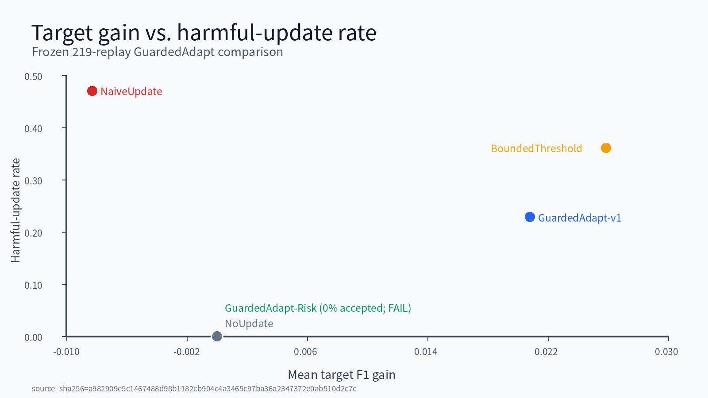
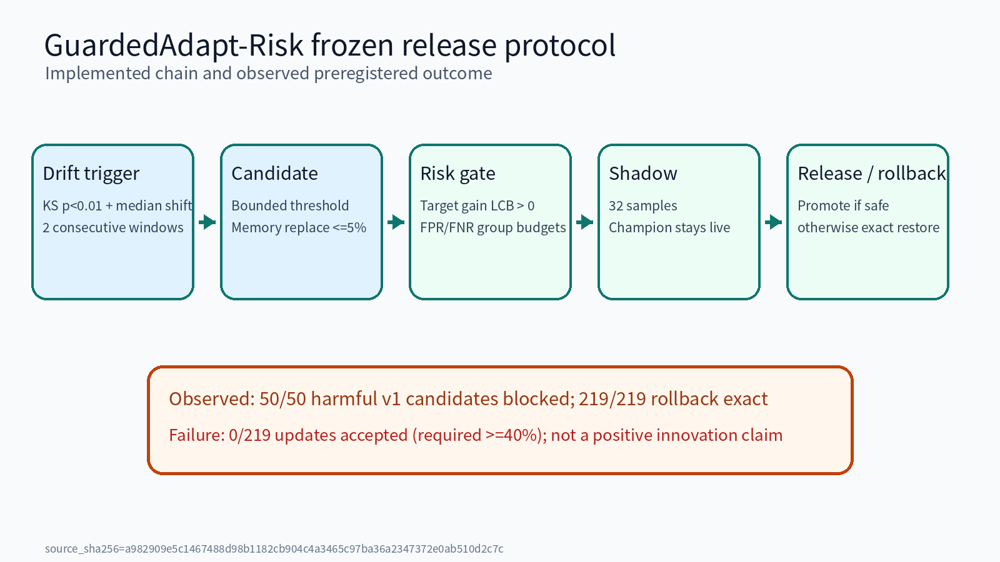

版本：PRELIMINARY-SUBMISSION FREEZE v1.3
日期：2026.08.30
团队名称：Cuisine 参赛组别：企业赛题组
队长：崔明浩 学校：西安交通大学
| 序号 | 更改原因 | 版本 | 作者 | 日期 |
|---|---|---|---|---|
| 1 | 初赛提交冻结，移除未验证主张并同步机器证据 | v1 | 崔明浩 | 2026-08-27 |
| 2 | 填写团队信息并登记清洁环境复现 | v1.1 | 崔明浩 | 2026-08-28 |
| 3 | 登记GuardedAdapt-Risk预注册负结果与EfficientAD严格评测进度 | v1.2 | 崔明浩 | 2026-08-29 |
| 4 | 登记EfficientAD最终负结果、真实GTX2060速度和视频GT指标 | v1.3 | 崔明浩 | 2026-08-30 |
工业组装质检不仅要识别划痕、污染和颜色变化，还要判断缺件、重复装配与工序换序。EvoInspect-130 面向“100张正常样本+30张缺陷样本”快速适配条件，构建离线、版本化、可回滚的图像/视频 AOI 原型。当前公开数据证据来自 MVTec AD；测试输入、测试真值与适配支持集采用独立清单和内容哈希隔离。
目标场景是桌面装配、消费电子与通用工业外观检查。系统输出异常分数、区域、已知/未知类型、置信度、时延分解和模型版本；视频侧输出步骤事件及时间区间。系统采用本地推理，不依赖远程 API 或大语言模型。
仍需公开数据许可复核和官方上传/接口口径。参赛组别已确认为企业赛题组，真实GTX 2060实测已完成。3090服务器为多人共享资源，训练脚本仅使用经检查可用的GPU，不终止其他用户任务。
提交冻结阶段聚焦四个闭环：冻结图像模型、真实视频演示、GuardedAdapt 反馈回放、四件官方提交物。PatchCore 固定为 Accuracy Engine；EfficientAD-M 按统一 100+30 协议复现并作为 Edge Engine 候选，S 仅作为速度 fallback。CPU 小于 2 秒为后置挑战项。
系统不把操作员反馈直接写入线上主模型。即时阈值/记忆更新可逆；候选更新必须同时满足反馈切片收益与锚定回归限制，拒绝后恢复原版本。v1在75个冻结分数流上提供安全机制证据；进一步加入漂移触发、真实记忆候选、群组统计风险门和影子发布的GuardedAdapt-Risk完成219次预注册回放，但因接受率为0而未通过质量门。因此该项只作为工程安全机制和研究负结果，不承担核心算法创新或准确率提高声明。
统一 InferenceEngine 显式切换 Accuracy/Edge，不允许静默 fallback，并保持输出、版本与时延字段一致。PatchCore不承担GTX 2060实时目标；EfficientAD-M/S虽通过优化速度线，但均未通过冻结质量门，故只作为部署候选负结果。
RCBR 正式 70,000-step 四类三种子 smoke 未通过预注册门槛，已停止研发。它只作为研究决策负结果，不进入摘要和主创新；HeteroMemory、GuardedFusion、MaskedPrototype 与 TriSynth 同样停止。
MVTec AD 直接归档验收得到 15 类 5354 张图像且内容重复为 0。固定 PatchCore 在 15 类、seeds 133–137 的 100+30 式隔离协议下完成 75/75 次评估。EfficientAD 环境固定 Anomalib 2.3.0、Torch 2.6.0+cu124 与上游提交；M/S 采用相同划分器、开发阈值和测试真值延迟读取规则。
| 模型/协议 | Overall F1 | Image AUROC | Unseen F1 | 范围 |
|---|---|---|---|---|
| PatchCore / MVTec AD 15类5 seeds | 0.9224 | 0.9817 | 0.8715 | 公开数据100+30式协议，非官方隐藏集 |
| EfficientAD-M / 15类3 seeds | 0.9036 | 0.9569 | 0.8210 | 45/45完成；后两项未过0.97/0.83冻结门 |
| EfficientAD-S / 15类1 seed | 0.8908 | 0.9639 | 0.7988 | 15/15完成；质量门失败后停止 |
PatchCore 的全像素 AUROC 为 0.9811、AUPRO@0.30 为 0.9342、AUPRO@0.05 为 0.7241。所有阈值由开发数据固定，不使用测试标签调参、早停或模型选择。
OpenCV 成功解码 5 段 1080×1920、约 98.13 秒的固定机位实拍视频。前端采用 ArUco 优先、简单组件检测 fallback，FSM 以“杯子→水瓶→鼠标”为预期顺序，输出 step_completed、skip、repeat、reorder、missing、unknown 及时间区间。按冻结人工GT、±0.5秒窗口和一对一二分匹配，19个GT事件中匹配18个，事件级Precision、Recall和F1均为0.9474。该结果只代表五段桌面功能验证，不代表工业准确率或跨场景泛化。
GuardedAdapt-v1 在15类5 seeds、75个冻结 PatchCore 真实分数流上完成离线反馈回放。GuardedAdapt-Risk进一步完成219次冻结回放：50个有害v1候选全部被阻断、219次回滚完全一致，但219个候选全部被拒绝，接受率0低于40%预注册门槛，故判定失败。本文不把该结果写成生产准确率提高或正向核心创新。
 图1 冻结回放的收益—有害更新率关系 |  图2 风险发布链与实际失败结论 |
在真实6GB GTX 2060上，2500×2500重采样输入、batch=1、预热100次、重复1000次。PyTorch FP32的S/M端到端p95为327.9/331.3ms，均失败；ONNX Runtime CUDA FP16优化后为151.3/166.2ms，model-only p95为8.2/19.4ms，均通过200ms速度线。该结果不抵消质量门失败，也不代表原生2500分辨率精度。
| 工作包 | 状态 | 责任人 |
|---|---|---|
| EfficientAD-M/S质量门 | 45/45与15/15完成；均冻结为负结果 | 崔明浩 |
| GTX 2060 2500时延 | 实测完成；ONNX FP16优化速度通过 | 崔明浩 |
| 视频与 GuardedAdapt | 视频GT F1=0.9474；Risk预注册门失败 | 崔明浩 |
| 材料审校、命名和上传 | 企业赛题组正式命名文件已生成，待上传 | 崔明浩 |
本项目为单人团队，项目调研、方案设计、代码实现、实验、视频和材料均由崔明浩独立完成。
evidence/claim_ledger.csv、docs/18_PRELIMINARY_SUBMISSION_FREEZE.md、各实验 report.json/aggregate.json。任何未由机器报告支持的数字必须删除。